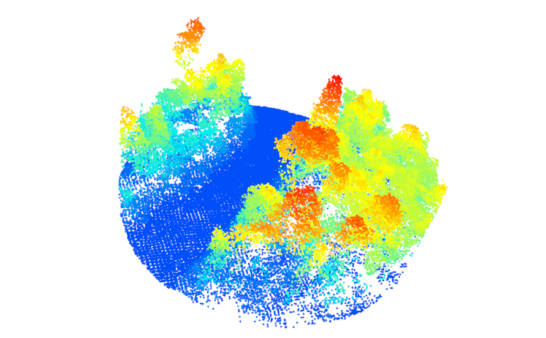
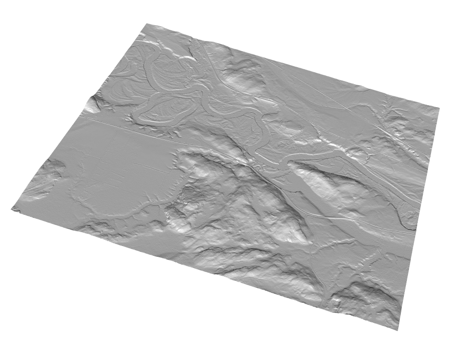

3 Reading, Generating, and Plotting Input Data
3.1 Reading LiDAR data
The lidR function readLAS() reads a LAS or LAZ file and returns an object of class LAS. Detailed information on loading LiDAR data using the lidR package can be found in the dedicated lidR vignette. In this user guide, we do not delve deeply into methods for working with ALS data and instead refer interested users to the lidR book.

3.2 Reading LiDAR data using readLAScatalog
A LAScatalog is a representation in R of a LAS file or a collection of LAS files. In lidR, the function readLAScatalog() creates an object that represents, in R, a collection of LAS files not loaded in memory.
ctg <- readLAScatalog("path/to/ctg/files")The print() function can summarize information about the LAScatalog, such as the number and density of points.
print(ctg)3.3 Reading and Generating DTM Raster Data
3.3.1 Reading a raster DTM using raster
ALSroads users may be provided with a 1 m resolution DTM that covers the LAScatalog coverage (refer to section 2.2 for DTM requirements). If a 1 m DTM is provided, users can load this information using the raster package.
library(raster)
dtm <- raster("path/to/dtm.tif)The loaded DTM can be plotted for visualization using the plot_dtm3d() function from the lidR package.
plot_dtm3d(dtm, bg = "white")
3.3.2 Generating DTM data using rasterize_terrain()
ALSroads users that do not have an existing 1 m resolution DTM can produce a DTM using LAS data and the function grid_terrain() from the lidR packages.
The rasterize_terrain() function interpolates ground points and creates a DTM. Here we demonstrate the Triangular irregular network (tin) interpolation method. The TIN method is fast, efficient, and generates good DTMs. To generate a 1 m resolution DTM model with the TIN algorithm, we use the rasterize_terrain() function and (1) specify the algorithm using algorithm = tin(), and (2) specify the DTM resolution using res = 1.
dtm_tin <- rasterize_terrain(ctg, res = 1, algorithm = tin())3.4 Reading Vector Road Data using st_read()
An existing road network is required to perform road extraction using ALSroads. Once users have sourced road data (file format = shapefile), the entire road network can be loaded into R using the sf package. The function st_read() reads simple features from a file. Detailed information on the st_read() function and the sf package is available online in a dedicated vignette.
roads <- st_read("path/to/roads")